BVP: Boundary value problems#
Boundary value problems (BVP) are very common in both theoretical (Sturm-Liuvoille problems) and engineering applications . In this case, boundary, not initial, conditions are specified. For example, you specify the initial and final positions of a particles, instead of the initial position and velocity. A typical application is the infinite well, where the particle must have :

BVP are more difficult to solve, and also represent our first step towards partial differential equations. Here will learn how to use IVP techniques to solve BVP by using the so-called shooting method. We will also check an alternative formulation, in terms of finite differences, where the BVP will be written as a matrix problem that will be solved using the previously seen techniques. We will also compare our solutions with the ones obtained from using scipy and the solve_ivp method, solve_bvp.
1. What makes a BVP different#
An IVP fixes everything at one point: \(y(a)\) and \(y'(a)\). Under mild smoothness conditions, a solution exists and is unique. A BVP splits the conditions between two (or more) points, e.g. \(y(a)=\alpha\), \(y(b)=\beta\), and then existence and uniqueness are no longer guaranteed.
A one-line example makes this concrete. Take
The general solution is \(y = c_1 \sin x + c_2 \cos x\). The left condition gives \(c_2 = 0\), so \(y = c_1 \sin x\), which always satisfies \(y(\pi)=0\). Therefore:
if \(B \neq 0\): no solution;
if \(B = 0\): infinitely many solutions (\(c_1\) is arbitrary).
Change the interval to \([0, 1]\) and the solution is unique: \(y = B \sin x / \sin 1\).
Two lessons for the rest of the lecture:
A numerical BVP solver can fail even when the code is correct — the problem itself may be ill-posed.
The “infinitely many solutions” case is exactly what happens in eigenvalue problems (Schrödinger, vibrating strings, buckling): \(y \equiv 0\) is always a solution, and nonzero solutions only exist for special values of a parameter. Section 8 shows how to handle this.
Counting conditions. A system of \(n\) first-order ODEs needs \(n\) conditions. A second-order equation
becomes \(n=2\), so it needs two conditions; a fourth-order beam equation needs four. If there are \(k\)
unknown parameters (an energy, a frequency, a length), you need \(n + k\) conditions. Keep this rule in
mind: it is the single most common source of errors with solve_bvp.
Shooting method#
The shooting method uses IVP solutions to estimate the best initial condition to solve the BVP. Imagine that you want to estimate the initial velocity for the cannon ball in order to make sure that it hits a given target at position \(b\).

Linear shooting method: interpolation#
The linear shooting method solves the problem for two different initial conditions, and from them computes the exact initial conditions needed (on the derivative). Then it solves again the BVP as a simple IVP given the extra and correct initial condition found. Let’s assume we have a linear second order equation. If you put the initial values \((y_{0}, v_{0a})\), you get the final value \(y_{fa}\) (first ICP solution). If you put the initial values \((y_{0}, v_{0b})\), you get the final value \(y_{fb}\) (second IVP solution).
For instance, let’s check the following example:
%matplotlib inline
import numpy as np
from scipy.integrate import solve_ivp
import matplotlib.pyplot as plt
from ipywidgets import interact, FloatSlider
# Define the second-order differential equation (e.g., damped harmonic oscillator)
def ode(t, y, k, b):
"""
Defines the system of first-order differential equations
representing the second-order ODE.
Args:
t: Time.
y: Array containing [y, y'].
k: Spring constant.
b: Damping coefficient.
Returns:
Array containing [y', y''].
"""
y1, y2 = y
return [y2, -k * y1 - b * y2]
# Function to solve and plot the ODE
def solve_and_plot(k, b, y0, v0):
"""
Solves the ODE using solve_ivp and plots the solution.
Args:
k: Spring constant.
b: Damping coefficient.
y0: Initial displacement.
v0: Initial velocity.
"""
t_span = (0, 10) # Time interval for integration
y0_vec = [y0, v0] # Initial conditions as a vector
# Solve the ODE
sol = solve_ivp(ode, t_span, y0_vec, args=(k, b), dense_output=True)
# Generate time points for plotting
t_plot = np.linspace(t_span[0], t_span[1], 100)
# Interpolate the solution at the plotting points
y_plot = sol.sol(t_plot)[0]
# Plot the solution
plt.figure()
plt.plot(t_plot, y_plot)
plt.xlabel("Time")
plt.ylabel("Displacement")
plt.title(f"k={k:.2f}, b={b:.2f}, y0={y0:.2f}, v0={v0:.2f}, yf={y_plot[-1]:.2f}")
plt.grid(True)
plt.show()
# Create interactive widgets
k_slider = FloatSlider(min=0, max=10, step=0.1, value=1, description='k')
b_slider = FloatSlider(min=0, max=5, step=0.1, value=0.5, description='b')
y0_slider = FloatSlider(min=-5, max=5, step=0.1, value=1, description='y0')
v0_slider = FloatSlider(min=-10, max=10, step=0.5, value=0, description='v0')
# Create the interactive plot
interact(solve_and_plot, k=k_slider, b=b_slider, y0=y0_slider, v0=v0_slider)
<function __main__.solve_and_plot(k, b, y0, v0)>
# TODO for you: Create a plot of the final position as a function of y0, with fixed parameters
In general, if the problem is linear, one has that a given initial condition in the first derivative gives a unique final value in position,

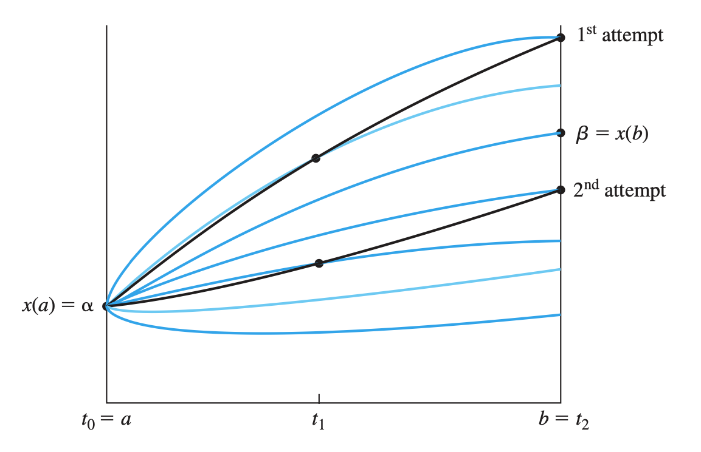
Fig. 1 From Cheney et al: Numerical Mathematics and Computing#
and if this functions is linear (given that the equation is linear) then we can interpolate as shown, with

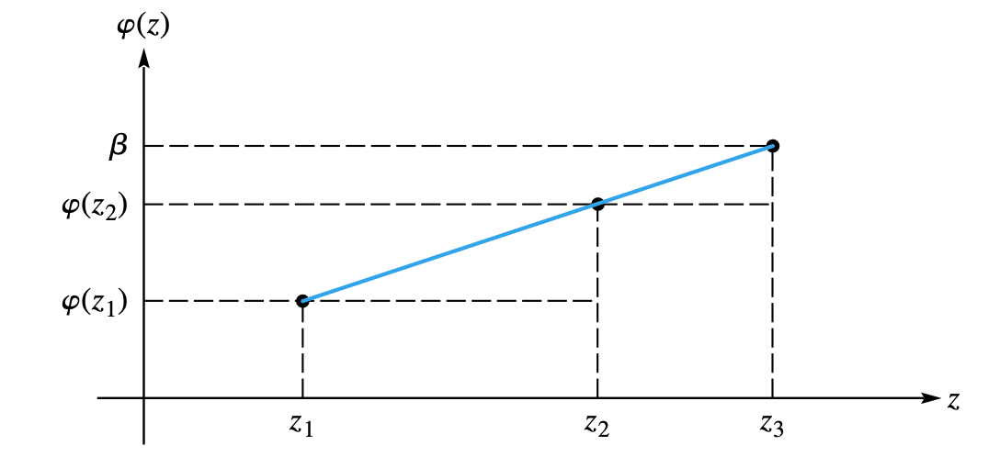
Fig. 2 From Cheney et al: Numerical Mathematics and Computing#
By taking into account the linear nature of the problem, we can compute the straight-line equation in the \(v_0 - y_f\) space to get the right initial condition as
Then, by using that initial condition, we compute the actual solution (third IVP solution).
Example: A ball under gravity
You can fix anything you want, like time: A ball is thrown vertically from \(y=0\) and must be back at \(y=0\) exactly at time \(T\). What initial velocity is needed?
Exact answer: \(y(t) = v_0 t - g t^2/2\), and \(y(T)=0\) gives \(v_0 = gT/2\). We can check it as
import numpy as np
import matplotlib.pyplot as plt
from scipy.integrate import solve_ivp
g, T = 9.81, 2.0
def rhs(t, y):
return [y[1], -g]
def shoot(v0):
"""Final position y(T) for initial velocity v0."""
sol = solve_ivp(rhs, (0, T), [0.0, v0], rtol=1e-10, atol=1e-12)
return sol.y[0, -1]
# Two arbitrary shots
v0a, v0b = 5.0, 15.0
yfa, yfb = shoot(v0a), shoot(v0b)
# Linear interpolation with target yf = 0
yf_target = 0.0
v0 = v0a + (yf_target - yfa) / (yfb - yfa) * (v0b - v0a)
print(f"shot a: v0={v0a:5.2f} -> y(T)={yfa:8.4f}")
print(f"shot b: v0={v0b:5.2f} -> y(T)={yfb:8.4f}")
print(f"interpolated v0 = {v0:.6f}, exact gT/2 = {g*T/2:.6f}")
# Plot the three trajectories
t = np.linspace(0, T, 200)
fig, ax = plt.subplots()
for v, style in [(v0a, '--'), (v0b, '--'), (v0, '-')]:
sol = solve_ivp(rhs, (0, T), [0.0, v], t_eval=t)
ax.plot(sol.t, sol.y[0], style, label=f"$v_0$ = {v:.2f}")
ax.axhline(0, color='k', lw=0.5)
ax.plot([0, T], [0, 0], 'ko')
ax.set_xlabel("t"); ax.set_ylabel("y"); ax.legend()
plt.show()
shot a: v0= 5.00 -> y(T)= -9.6200
shot b: v0=15.00 -> y(T)= 10.3800
interpolated v0 = 9.810000, exact gT/2 = 9.810000
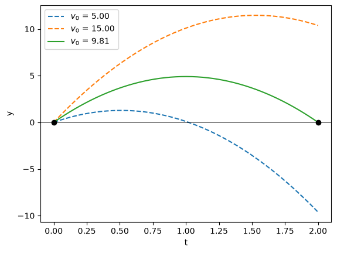
Exercise 1
As an example, let’s solve the following problem (Chapra 24.11): Compound \(A\) diffuses through a 4-cm-long tube and reacts as it diffuses. The process can be modeled as
At \(x=0\) there is a large source of \(A\) with fixed concentration of \(0.1\) M. At the other end there is a material that quickly absorbs \(A\), so the concentration is 0 M. If \(D = 1.5\times 10^{-6}\) cm\(^2\)/s and \(k = 5\times 10^{-6}\) s\(_1\), what is the concentration along the tube?
Write a function that returns the correct initial derivative value and plots the concentration along the tube. The pseudo algorithm would be
Solve the ivp with an arbitrary (but reasonable) initial condition on velocity. Store the final “position” value.
Solve the ivp with another arbitrary (but reasonable) initial condition on velocity. Store the final “position” value.
Apply the interpolation formula to compute the appropriate initial condition.
Plot the final solution
import numpy as np
import seaborn as sns
import matplotlib.pyplot as plt
sns.set()
sns.set_context("poster")
def deriv(t, y, params):
return [y[1], params[1]*y[0]/params[0]]
def mysolve_bvp(y0, yf, v0a, v0b, t0, tf, dt, params):
# YOUR CODE HERE
pass
PARAMS = (1.5e-6, 5e-6)
mysolve_bvp(0.1, 0.0, -0.23, -0.14, 0.0, 4.0, 0.1, PARAMS)
Linear shooting method: root finding#
The previous problem can be written as a root finding procedure. And this allows to generalize the procedure to non-linear problems. If we see the IVP solution as a function of the initial velocity condition, \(y_f = g(v_0)\) (plus other parameters), then we can see this problem as a root finding one, looking for the right \(v_0\) that gives \(h(v_0) = 0 = g(v_0) - y_f\). As you can see later, this will allow us to extend the shooting method to non-linear problems. Python allows us to compute roots using the scipy.optimize.root method.
Example: ball under gravity
Let’s go back to the initial example of the ball under gravity. Now we can replace the the extrapolation by a root finding procedure:
import numpy as np
import matplotlib.pyplot as plt
from scipy.integrate import solve_ivp
from scipy.optimize import root
g, T = 9.81, 2.0
def rhs(t, y):
return [y[1], -g]
def h(v0, yf):
return shoot(v0[0]) - yf
def shoot(v0):
"""Final position y(T) for initial velocity v0."""
sol = solve_ivp(rhs, (0, T), [0.0, v0], rtol=1e-10, atol=1e-12)
return sol.y[0, -1]
# Solve
res = root(h, x0=[1.0], args=(0.0,))
print(res.x[0], res.fun, res.success)
v0 = res.x[0]
# Plot the solution
t = np.linspace(0, T, 200)
fig, ax = plt.subplots()
for v, style in [(v0, '-')]:
sol = solve_ivp(rhs, (0, T), [0.0, v], t_eval=t)
ax.plot(sol.t, sol.y[0], style, label=f"$v_0$ = {v:.2f}")
ax.axhline(0, color='k', lw=0.5)
ax.plot([0, T], [0, 0], 'ko')
ax.set_xlabel("t"); ax.set_ylabel("y"); ax.legend()
plt.show()
9.809999999999995 1.7763568394002505e-15 False
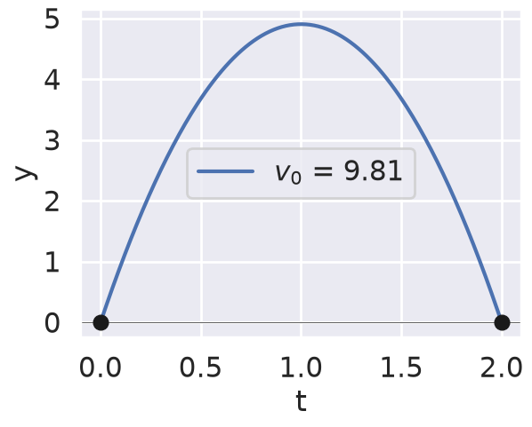
Notice how the solver shows no convergence even though we are at numerical precision.
Now you can apply the same to the diffusion problem:
import numpy as np
import seaborn as sns
import matplotlib.pyplot as plt
from scipy.optimize import root
from scipy.integrate import solve_ivp
# Set up seaborn styling
sns.set()
sns.set_context("poster")
def deriv(t, y, params):
"""Derivative function for the ODE system"""
return [y[1], params[1]*y[0]/params[0]]
def h(v0, y0, yf, t0, tf, dt, params):
"""Function to be zeroed - returns the difference between computed final value and desired final value"""
# Convert v0 to float in case it comes as an array
#print(v0)
v0 = v0[0]
# YOUR CODE HERE
pass
def solve_bvp_root(y0, yf, v0_guess, t0, tf, dt, params):
"""Solve the boundary value problem using root finding"""
# Find the initial velocity that satisfies the boundary condition
result = root(h, v0_guess, args=(y0, yf, t0, tf, dt, params))
v0 = result.x[0]
print(f"Found initial velocity: {v0}")
# Solve the IVP with the found initial velocity
sol = solve_ivp(deriv, [t0, tf], [y0, v0],
t_eval=np.arange(t0, tf+dt, dt),
args=(params,))
# Create the plot
fig, ax = plt.subplots(figsize=(10, 6))
ax.plot(sol.t, sol.y[0], 'b-', label='Solution')
ax.set_xlabel('Time')
ax.set_ylabel('y(t)')
ax.set_title('Boundary Value Problem Solution')
ax.grid(True)
plt.show()
return v0
# Example parameters and solution
PARAMS = (1.5e-6, 5e-6)
v0_solution = solve_bvp_root(0.1, 0.0, -0.23, 0.0, 4.0, 0.1, PARAMS)
Found initial velocity: -0.23
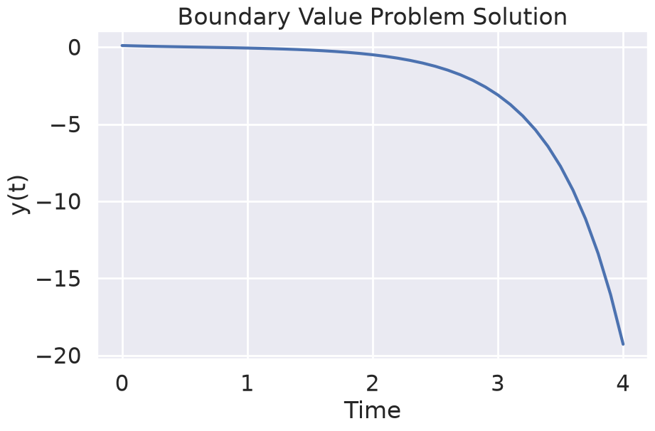
Non linear shooting method#
As we said, formulating the problem as a root finding one allows us to extend the method to non-linear systems (there are even better generalization like the https://en.wikipedia.org/wiki/Direct_multiple_shooting_method). Let’s now solve the same problem but adding some drag coefficient, \(f_v = -b v\)
import numpy as np
import seaborn as sns
import matplotlib.pyplot as plt
from scipy.optimize import root
from scipy.integrate import solve_ivp
# Set up seaborn styling
sns.set()
sns.set_context("poster")
def deriv(t, y, params):
"""Derivative function for the ODE system"""
return [y[1], params[1]*y[0]/params[0] - params[2]*y[1]]
def h(v0, y0, yf, t0, tf, dt, params):
"""Function to be zeroed - returns the difference between computed final value and desired final value"""
# Convert v0 to float in case it comes as an array
#print(v0)
v0 = v0[0]
# YOUR CODE HERE
pass
def solve_bvp_root(y0, yf, v0_guess, t0, tf, dt, params):
"""Solve the boundary value problem using root finding"""
# Find the initial velocity that satisfies the boundary condition
result = root(h, v0_guess, args=(y0, yf, t0, tf, dt, params))
v0 = result.x[0]
print(f"Found initial velocity: {v0}")
# Solve the IVP with the found initial velocity
sol = solve_ivp(deriv, [t0, tf], [y0, v0],
t_eval=np.arange(t0, tf+dt, dt),
args=(params,))
# Create the plot
fig, ax = plt.subplots(figsize=(10, 6))
ax.plot(sol.t, sol.y[0], 'b-', label='Solution')
ax.set_xlabel('Time')
ax.set_ylabel('y(t)')
ax.set_title('Boundary Value Problem Solution')
ax.grid(True)
plt.show()
return v0
# Example parameters and solution
PARAMS = (1.5e-6, 5e-6, 0.0)
solve_bvp_root(0.1, 0.0, -0.33, 0.0, 4.0, 0.1, PARAMS)
Found initial velocity: -0.33
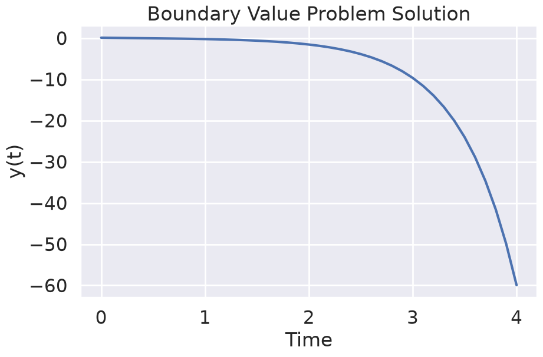
np.float64(-0.33)
PARAMS = (1.5e-6, 5e-6, 4.8920)
solve_bvp_root(0.1, 0.0, +0.33, 0.0, 4.0, 0.1, PARAMS)
Found initial velocity: 0.33
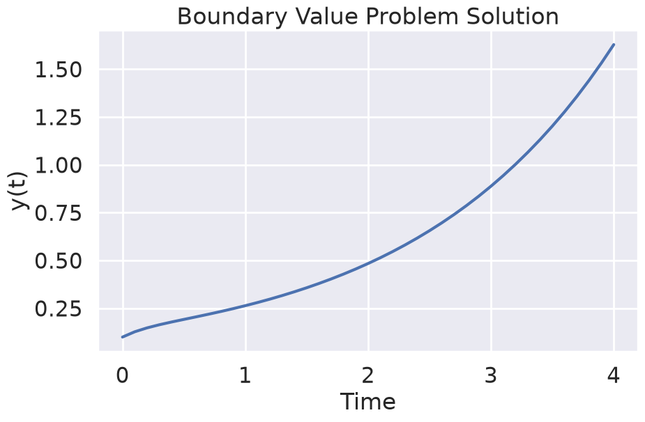
np.float64(0.33)
Using scipy: solve_bvp#
The scipy module offers an useful function, scipy.integrate.solve_ivp , to solve the problems we have been exploring. Check the manual and adapt the method .
Be careful: parameters are now treated as something that can vary, like the initial velocity or the energy in a quantum system, so our previous parameter use should be updated.
The typical use is
from scipy.integrate import solve_bvp
sol = solve_bvp(fun, bc, x, y, p=None, S=None, tol=1e-3, max_nodes=1000, verbose=0)
Step 0: write the problem as a first-order system#
solve_bvp only understands \(\mathbf{y}' = \mathbf{f}(x, \mathbf{y}, \mathbf{p})\). For a second-order
equation \(u'' = F(x, u, u')\) use \(y_0 = u\), \(y_1 = u'\):
The arguments#
Argument |
What it is |
Shape |
|---|---|---|
|
Right-hand side of the system. Vectorized: it receives all mesh points at once. |
|
|
Boundary residuals: a vector that must become zero. |
|
|
Initial mesh. |
|
|
Initial guess of the solution on the mesh (not an initial condition!). |
|
|
Initial guess for the unknown parameters. Omit it when nothing is unknown. |
|
|
Matrix for a singular term \(S\,y/(x-a)\), e.g. \(1/r\) in cylindrical problems. |
|
|
Tolerance on the relative residual of the ODE between nodes. Default |
scalar |
|
Maximum mesh size before giving up. Increase it if you see the “maximum number of mesh nodes” message. |
int |
|
|
int |
Here \(n\) is the number of ODEs, \(m\) the number of mesh points, \(k\) the number of unknown parameters.
The golden rule#
Number of residuals returned by bc = \(n + k\)
2nd-order ODE, nothing unknown →
bcreturns 2 values.2nd-order ODE plus an unknown energy \(E\) →
bcreturns 3 values.4th-order ODE (beam) → 4 values.
If this is violated, SciPy raises ValueError: bc return is expected to have shape (n+k,), but actually has ....
The most common confusion: p is for unknowns, not for constants#
In solve_ivp you pass physical constants with args=(...). solve_bvp has no args, and
p means something completely different: parameters that the solver must find, like the energy in
the Schrödinger equation. Every entry in p is an extra unknown that requires an extra boundary
condition.
Pass fixed constants with a closure, a lambda, or functools.partial:
import numpy as np
from functools import partial
from scipy.integrate import solve_bvp
D, kr = 1.5e-6, 5e-6 # fixed physical constants
def rhs(x, y, D, kr): # constants as ordinary extra arguments
return np.vstack((y[1], (kr / D) * y[0]))
def bc(ya, yb):
return np.array([ya[0] - 0.1, yb[0] - 0.0])
x = np.linspace(0, 4, 50)
y_guess = np.zeros((2, x.size))
# Option A: lambda
sol = solve_bvp(lambda x, y: rhs(x, y, D, kr), bc, x, y_guess)
print(sol.status, sol.message)
print(sol)
0 The algorithm converged to the desired accuracy.
message: The algorithm converged to the desired accuracy.
success: True
status: 0
x: [ 0.000e+00 8.163e-02 ... 3.918e+00 4.000e+00]
sol: <scipy.interpolate._interpolate.PPoly object at 0x7fe47049eed0>
p: None
y: [[ 1.000e-01 8.615e-02 ... 2.015e-05 5.654e-23]
[-1.826e-01 -1.573e-01 ... -2.487e-04 -2.459e-04]]
yp: [[-1.826e-01 -1.573e-01 ... -2.487e-04 -2.459e-04]
[ 3.333e-01 2.872e-01 ... 6.717e-05 1.885e-22]]
rms_residuals: [ 5.281e-06 4.687e-06 ... 8.834e-09 8.587e-09]
niter: 1
These are the other options to build a callable:
# Option B: functools.partial
sol = solve_bvp(partial(rhs, D=D, kr=kr), bc, x, y_guess)
# Option C: a factory returning a closure (handy for parameter sweeps)
def make_rhs(D, kr):
def f(x, y):
return np.vstack((y[1], (kr / D) * y[0]))
return f
sol = solve_bvp(make_rhs(D, kr), bc, x, y_guess)
The signature changes when p is given#
Without
p:fun(x, y)andbc(ya, yb).With
p:fun(x, y, p)andbc(ya, yb, p)— both functions receivep, even if one of them does not use it.
Reading the result#
Attribute |
Meaning |
|---|---|
|
Always check them. |
|
Final (refined) mesh and solution on it. |
|
Interpolating function (cubic, \(C^1\)): evaluate anywhere, e.g. on a fine grid for plots. |
|
Values found for the unknown parameters. |
|
Residual per mesh interval; useful to see where the solution is hard. |
|
Number of iterations. |
What solve_bvp does internally (and why the guess matters)#
solve_bvp is not a shooting method. It is a collocation method (4th-order Lobatto IIIA): it
writes the ODE on every mesh interval plus the boundary residuals as one big nonlinear algebraic
system for all values \(y(x_i)\), solves it with Newton’s method, and refines the mesh where the
residual is large. Conceptually it is much closer to the matrix/finite-difference formulation (that is presented at
the end of the lecture) than to shooting.
Consequences:
The initial guess
yis the starting point for Newton’s method on the whole solution. For linear problems almost any guess works; for nonlinear and eigenvalue problems, the guess selects which solution you get (see below).It does not suffer from the exponential sensitivity that ruins shooting.
A template to copy#
import numpy as np
import matplotlib.pyplot as plt
from scipy.integrate import solve_bvp
def fun(x, y): # add p if there are unknown parameters
return np.vstack((y[1], # y0' = y1
-1.0 + 0*y[0]))# y1' = F(x, y0, y1) (keep the shape (m,)!)
def bc(ya, yb): # return n + k residuals
return np.array([ya[0] - 0.0, # y(a) = 0
yb[0] - 0.0]) # y(b) = 0
x = np.linspace(0, 1, 11)
y_guess = np.zeros((2, x.size))
sol = solve_bvp(fun, bc, x, y_guess, tol=1e-8)
assert sol.success, sol.message
xx = np.linspace(0, 1, 200)
plt.plot(xx, sol.sol(xx)[0]); plt.xlabel("x"); plt.ylabel("y"); plt.show()
Shape trap: in
y1' = -1you must return an array of lengthm, not the scalar-1. Writing-1.0 + 0*y[0]or-np.ones_like(x)keeps the right shape. Likewise usenp.exp,np.sin, … — nevermath.exp, which fails on arrays.
Boundary conditions as residuals#
A residual is “left-hand side minus right-hand side” of the condition. The solver drives it to zero. With \(y_0 = u\) and \(y_1 = u'\):
Condition |
Physical meaning (heat rod) |
Residual in |
|---|---|---|
Dirichlet \(u(a) = \alpha\) |
Fixed temperature |
|
Neumann \(u'(b) = \beta\) |
Fixed heat flux (\(\beta=0\): insulated) |
|
Robin \(u'(b) = -h\,(u(b) - u_\infty)\) |
Convective cooling at the end |
|
Periodic \(u(a)=u(b)\), \(u'(a)=u'(b)\) |
Ring |
|
Both at \(a\): \(u(a)=\alpha\), \(u'(a)=\gamma\) |
This is really an IVP! |
|
Normalization (eigenproblems) \(u'(a) = 1\) |
Fixes the arbitrary amplitude |
|
Unknown parameter \(E\) fixed by a condition |
Energy, frequency, length |
any extra residual involving |
Note that there is no rule “one condition at each end”: what matters is the total count \(n+k\).
Example: Dirichlet conditions with solve_bvp#
The ball of previous sections, now with solve_bvp. We also recover \(v_0\) from sol.y[1][0].
import numpy as np
import matplotlib.pyplot as plt
from scipy.integrate import solve_bvp
g, T = 9.81, 2.0
def fun(t, y):
return np.vstack((y[1], -g * np.ones_like(t)))
def bc(ya, yb):
return np.array([ya[0] - 0.0, # y(0) = 0
yb[0] - 0.0]) # y(T) = 0
t = np.linspace(0, T, 5)
y_guess = np.zeros((2, t.size)) # a terrible guess works: the problem is linear
sol = solve_bvp(fun, bc, t, y_guess, tol=1e-8)
print(sol.message)
print("v0 from solve_bvp:", sol.y[1, 0], " exact:", g * T / 2)
print(sol)
tt = np.linspace(0, T, 200)
plt.plot(tt, sol.sol(tt)[0], label="solve_bvp")
plt.plot(tt, g*T/2*tt - g*tt**2/2, '--', label="exact")
plt.xlabel("t"); plt.ylabel("y"); plt.legend(); plt.show()
The algorithm converged to the desired accuracy.
v0 from solve_bvp: 9.809999999999999 exact: 9.81
message: The algorithm converged to the desired accuracy.
success: True
status: 0
x: [ 0.000e+00 5.000e-01 1.000e+00 1.500e+00 2.000e+00]
sol: <scipy.interpolate._interpolate.PPoly object at 0x7fe4704d6990>
p: None
y: [[ 0.000e+00 3.679e+00 4.905e+00 3.679e+00 0.000e+00]
[ 9.810e+00 4.905e+00 0.000e+00 -4.905e+00 -9.810e+00]]
yp: [[ 9.810e+00 4.905e+00 0.000e+00 -4.905e+00 -9.810e+00]
[-9.810e+00 -9.810e+00 -9.810e+00 -9.810e+00 -9.810e+00]]
rms_residuals: [ 1.212e-16 1.252e-16 1.252e-16 1.212e-16]
niter: 1
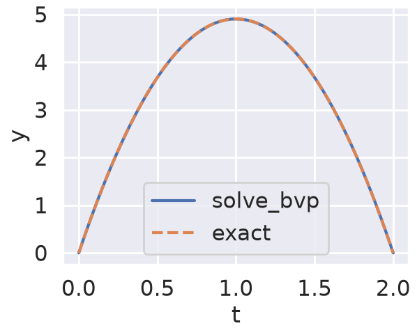
Exercise : non linear problem using solve_bvp#
Now use solve_bvp to solve the non linear problem for the diffusion equation.
import numpy as np
import seaborn as sns
import matplotlib.pyplot as plt
from scipy.integrate import solve_bvp
sns.set()
sns.set_context("talk")
#sol = solve_bvp(lambda x, y: rhs(x, y, D, kr), bc, x, y_guess)
def deriv(t, y, params):
# YOUR CODE HERE
pass
def bc(ya, yb, params):
# YOUR CODE HERE
pass
def mysolve_bvp(x, y0, params):
# YOUR CODE HERE
pass
return sol
for PARAMS in [np.array([1.5e-6, 5e-6, 0.0]), np.array([1.5e-6, 5e-6, 4.8920])]:
x = np.linspace(0, 4.0, 100)
y0 = np.ones((2, x.size))
fig, ax = plt.subplots()
sol = mysolve_bvp(x, y0, PARAMS)
ax.plot(sol.x, sol.y[0])
print(sol.p)
None
None
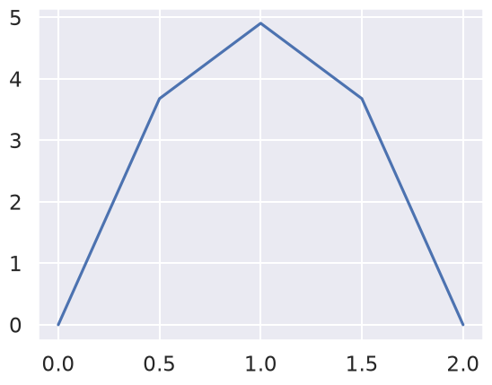
Example: Neumann and Robin conditions#
A rod of length 1 with uniform internal heating (nondimensional):
Case (a) — insulated at \(x=0\), fixed temperature at \(x=1\): \(u'(0) = 0\), \(u(1) = 0\). Exact: \(u = (1 - x^2)/2\).
Case (b) — insulated at \(x=0\), convective cooling at \(x=1\): \(u'(1) = -h\,u(1)\) (ambient at 0). Exact: \(u = (1 - x^2)/2 + 1/h\). (The end is now warmer: heat has to “push” through the convective resistance \(1/h\).)
Only bc changes between the cases; fun is the same.
import numpy as np
import matplotlib.pyplot as plt
from scipy.integrate import solve_bvp
def fun(x, y):
return np.vstack((y[1], -np.ones_like(x)))
def bc_neumann_dirichlet(ya, yb):
return np.array([ya[1] - 0.0, # u'(0) = 0 (Neumann)
yb[0] - 0.0]) # u(1) = 0 (Dirichlet)
def make_bc_robin(h):
def bc(ya, yb):
return np.array([ya[1] - 0.0, # u'(0) = 0
yb[1] + h*yb[0]]) # u'(1) = -h u(1) (Robin)
return bc
x = np.linspace(0, 1, 11)
y_guess = np.zeros((2, x.size))
xx = np.linspace(0, 1, 200)
fig, ax = plt.subplots()
sol = solve_bvp(fun, bc_neumann_dirichlet, x, y_guess, tol=1e-8)
ax.plot(xx, sol.sol(xx)[0], label="Neumann + Dirichlet")
ax.plot(xx, (1 - xx**2)/2, 'k:', lw=2)
print("(a) max error:", np.abs(sol.sol(xx)[0] - (1 - xx**2)/2).max())
for h in [1.0, 5.0]:
sol = solve_bvp(fun, make_bc_robin(h), x, y_guess, tol=1e-8)
ax.plot(xx, sol.sol(xx)[0], label=f"Neumann + Robin, h={h}")
ax.plot(xx, (1 - xx**2)/2 + 1/h, 'k:', lw=2)
print(f"(b) h={h}: max error:", np.abs(sol.sol(xx)[0] - ((1 - xx**2)/2 + 1/h)).max())
ax.set_xlabel("x"); ax.set_ylabel("u"); ax.legend(); plt.show()
(a) max error: 1.1102230246251565e-16
(b) h=1.0: max error: 4.440892098500626e-16
(b) h=5.0: max error: 1.1102230246251565e-16
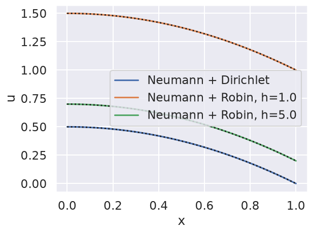
Tip
With \(h \to \infty\) the Robin condition becomes Dirichlet \(u(1)=0\); with \(h \to 0\) it becomes Neumann. Robin interpolates between the two.
Try two Neumann conditions \(u'(0)=0\), \(u'(1)=0\): the solver fails. Physically: heat is produced but cannot leave, so there is no steady state (and mathematically, \(\int_0^1 u''\,dx = u'(1)-u'(0)\) must equal \(-1\), contradicting \(0-0=0\)). Another instance of section 1.
Example: a nonlinear BVP with two solutions (Bratu)#
The Bratu problem appears in combustion (Frank-Kamenetskii theory of thermal explosion):
For \(0 < \lambda < \lambda_c \approx 3.51\) there are two solutions; above \(\lambda_c\) there are none (the “explosion”). The exact solution is
With solve_bvp, the initial guess decides which solution you get:
import numpy as np
import matplotlib.pyplot as plt
from scipy.integrate import solve_bvp
from scipy.optimize import brentq
lam = 1.0
def fun(x, y):
return np.vstack((y[1], -lam * np.exp(y[0])))
def bc(ya, yb):
return np.array([ya[0], yb[0]])
x = np.linspace(0, 1, 21)
xx = np.linspace(0, 1, 200)
fig, ax = plt.subplots()
for amp in [0.0, 4.0]: # flat guess vs. a "bump" of height 4
y_guess = np.zeros((2, x.size))
y_guess[0] = amp * 4 * x * (1 - x) # parabola with maximum = amp
y_guess[1] = amp * 4 * (1 - 2 * x) # its derivative (optional but helps)
sol = solve_bvp(fun, bc, x, y_guess, tol=1e-8, max_nodes=10000)
print(f"guess amplitude {amp}: {sol.message} max u = {sol.sol(xx)[0].max():.4f}")
ax.plot(xx, sol.sol(xx)[0], label=f"guess amplitude {amp}")
# Exact solutions: theta solves theta = sqrt(2 lam) cosh(theta/4)
F = lambda th: th - np.sqrt(2 * lam) * np.cosh(th / 4)
for a, b in [(0.1, 4.0), (4.0, 20.0)]:
th = brentq(F, a, b)
u = -2 * np.log(np.cosh((xx - 0.5) * th / 2) / np.cosh(th / 4))
ax.plot(xx, u, 'k:', lw=2)
print(f"exact branch theta={th:.4f}: max u = {u.max():.4f}")
ax.set_xlabel("x"); ax.set_ylabel("u"); ax.legend(); plt.show()
guess amplitude 0.0: The algorithm converged to the desired accuracy. max u = 0.1405
guess amplitude 4.0: The algorithm converged to the desired accuracy. max u = 4.0913
exact branch theta=1.5172: max u = 0.1405
exact branch theta=10.9387: max u = 4.0913
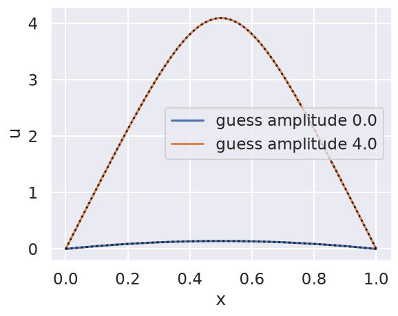
Exercise 2
increase \(\lambda\) beyond \(3.51\) and watch the solver fail;
solve the same problem with the nonlinear shooting method of the lecture and find both solutions by plotting \(h(v_0) = u(1; v_0)\) — it crosses zero twice.
Example: an eigenvalue problem (unknown parameter)#
A string (or a column under buckling) fixed at \(x=0\) and free at \(x=1\):
Exact eigenvalues: \(\lambda_n = \left(\frac{(2n-1)\pi}{2}\right)^2 = 2.467,\ 22.207,\ 61.685,\dots\), with eigenfunctions \(\sin\big((2n-1)\pi x/2\big)\).
Why a third boundary condition?#
\(n = 2\) ODEs and \(k = 1\) unknown (\(\lambda\)) → we need \(2 + 1 = 3\) residuals.
Physically: if \(u\) is a solution, so is \(5u\) or \(10^{-3}u\). The two physical conditions cannot fix the amplitude, and \(u \equiv 0\) (any \(\lambda\)) satisfies them too. Without a third condition the solver happily converges to the trivial solution \(u \equiv 0\).
A normalization condition fixes the amplitude and excludes \(u \equiv 0\). The simplest is \(u'(0) = 1\) (any nonzero value works). Afterwards you can renormalize so \(\int u^2 dx = 1\).
Which eigenvalue do you get?#
The one “closest” to your guesses of \(\lambda\) and of the shape. Give a guess with the right number of nodes (zeros) and a \(\lambda\) near the expected value.
import numpy as np
import matplotlib.pyplot as plt
from scipy.integrate import solve_bvp, trapezoid
def fun(x, y, p):
lam = p[0]
return np.vstack((y[1], -lam * y[0]))
def bc(ya, yb, p):
return np.array([ya[0] - 0.0, # u(0) = 0 (fixed end)
yb[1] - 0.0, # u'(1) = 0 (free end)
ya[1] - 1.0]) # u'(0) = 1 (normalization, kills u = 0)
x = np.linspace(0, 1, 50)
xx = np.linspace(0, 1, 300)
fig, ax = plt.subplots()
for nmode in [1, 2, 3]:
q = (2 * nmode - 1) * np.pi / 2
y_guess = np.vstack((np.sin(q * x), q * np.cos(q * x))) # right number of nodes
lam_guess = 0.8 * q**2 # deliberately 20% off
sol = solve_bvp(fun, bc, x, y_guess, p=[lam_guess], tol=1e-8, max_nodes=10000)
u = sol.sol(xx)[0]
u /= np.sqrt(trapezoid(u**2, xx)) # normalize: ∫u² dx = 1
print(f"mode {nmode}: lambda = {sol.p[0]:.6f} exact = {q**2:.6f} ({sol.message})")
ax.plot(xx, u, label=fr"$\lambda_{nmode}$ = {sol.p[0]:.3f}")
ax.axhline(0, color='k', lw=0.5)
ax.set_xlabel("x"); ax.set_ylabel("u (normalized)"); ax.legend(); plt.show()
mode 1: lambda = 2.467401 exact = 2.467401 (The algorithm converged to the desired accuracy.)
mode 2: lambda = 22.206610 exact = 22.206610 (The algorithm converged to the desired accuracy.)
mode 3: lambda = 61.685028 exact = 61.685028 (The algorithm converged to the desired accuracy.)
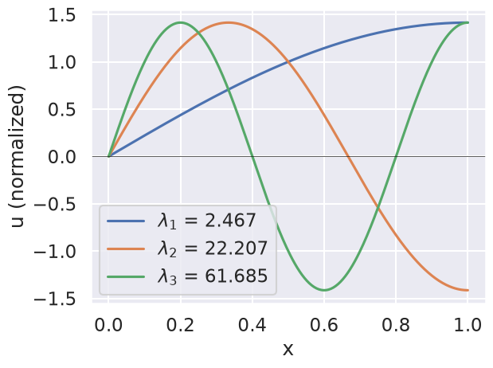
Example: an unknown interval length (rescaling trick)#
solve_bvp needs a fixed interval, but sometimes the length is the unknown: a time of flight, the
height a meniscus reaches, the length of a fin. The trick is to rescale to \([0,1]\) and make the
length an unknown parameter.
A ball is thrown upward with known speed \(v_0\). When does it land? (Exact: \(T = 2v_0/g\).)
With \(s = t/T \in [0,1]\): \(\dfrac{d}{dt} = \dfrac{1}{T}\dfrac{d}{ds}\). Writing \(y_0 = y\), \(y_1 = dy/dt\) (keep the physical velocity as the second variable):
Count: \(n = 2\), \(k = 1\) → 3 residuals: \(y_0(0)=0\), \(y_1(0)=v_0\), \(y_0(1)=0\).
import numpy as np
from scipy.integrate import solve_bvp
g, v0 = 9.81, 12.0
def fun(s, y, p):
T = p[0]
return np.vstack((T * y[1], -g * T * np.ones_like(s)))
def bc(ya, yb, p):
return np.array([ya[0], ya[1] - v0, yb[0]])
s = np.linspace(0, 1, 11)
y_guess = np.vstack((np.sin(np.pi * s), v0 * np.cos(np.pi * s))) # goes up and comes down
sol = solve_bvp(fun, bc, s, y_guess, p=[1.0], tol=1e-8)
print(f"T = {sol.p[0]:.6f} exact = {2*v0/g:.6f}")
# The physical time grid is t = s * T: t = sol.x * sol.p[0]
T = 2.446483 exact = 2.446483
Example: finite differences with a Neumann condition (ghost node)#
Problem: \(u'' = -\cos(\pi x/2)\) on \([0,1]\), \(u'(0) = 0\), \(u(1) = 0\). Exact: \(u = \frac{4}{\pi^2}\cos(\pi x/2)\).
Grid: \(x_i = i\,\Delta x\), \(i = 0,\dots,N\), \(\Delta x = 1/N\). Unknowns: \(u_0,\dots,u_{N-1}\) (\(u_N = 0\) is known). Now \(u_0\) is unknown, because the left condition is on the derivative.
Interior rows (\(1 \le i \le N-1\)): \(u_{i-1} - 2u_i + u_{i+1} = -\Delta x^2 f_i\), with \(f_i = \cos(\pi x_i/2)\).
Left row (\(i = 0\)): the stencil needs \(u_{-1}\), outside the domain. The centred Neumann condition \(\frac{u_1 - u_{-1}}{2\Delta x} = u'(0) = 0\) gives the ghost node \(u_{-1} = u_1\), so \(-2u_0 + 2u_1 = -\Delta x^2 f_0\).
Right row: \(u_N = 0\) moves to the right-hand side (here it contributes 0).
For \(N = 4\) (unknowns \(u_0,\dots,u_3\)):
import numpy as np
def solve_fd_neumann(N):
dx = 1.0 / N
x = np.linspace(0, 1, N + 1)
f = np.cos(np.pi * x / 2)
A = (np.diag(-2.0 * np.ones(N)) +
np.diag(np.ones(N - 1), 1) +
np.diag(np.ones(N - 1), -1))
A[0, 1] = 2.0 # ghost node: u_{-1} = u_1
b = -dx**2 * f[:N]
b[-1] -= 0.0 # u_N = 0 (Dirichlet), shown explicitly
u = np.linalg.solve(A, b)
return x, np.concatenate((u, [0.0]))
exact = lambda x: 4 / np.pi**2 * np.cos(np.pi * x / 2)
print(" N max error ratio")
prev = None
for N in [10, 20, 40, 80, 160]:
x, u = solve_fd_neumann(N)
err = np.abs(u - exact(x)).max()
print(f"{N:4d} {err:.3e} {'' if prev is None else f'{prev/err:.2f}'}")
prev = err
N max error ratio
10 8.344e-04
20 2.084e-04 4.00
40 5.209e-05 4.00
80 1.302e-05 4.00
160 3.255e-06 4.00
When shooting breaks: sensitivity to the initial slope#
Shooting integrates an IVP across the whole interval. If the ODE has a growing mode, small errors in \(v_0\) are amplified exponentially. Take
The solution decays like \(e^{-\kappa x}\), but the IVP also contains \(e^{+\kappa x}\), so \(\partial u(1)/\partial v_0 = \sinh(\kappa)/\kappa \sim e^{\kappa}/(2\kappa)\): an error of \(10^{-12}\) in \(v_0\) becomes an error of order \(10^{-12} e^{\kappa}\) at \(x=1\).
import numpy as np
from scipy.integrate import solve_ivp, solve_bvp
for kappa in [5, 20, 40, 80]:
# exact slope: u = sinh(kappa(1-x))/sinh(kappa) -> u'(0) = -kappa*coth(kappa)
v0_exact = -kappa / np.tanh(kappa)
rhs = lambda x, y: [y[1], kappa**2 * y[0]]
end = solve_ivp(rhs, (0, 1), [1.0, v0_exact], rtol=1e-12, atol=1e-14).y[0, -1]
fun = lambda x, y: np.vstack((y[1], kappa**2 * y[0]))
bc = lambda ya, yb: np.array([ya[0] - 1, yb[0]])
x = np.linspace(0, 1, 50)
sol = solve_bvp(fun, bc, x, np.zeros((2, x.size)), tol=1e-6, max_nodes=10000)
print(f"kappa={kappa:3d}: shooting with the EXACT slope ends at u(1) = {end: .2e};"
f" solve_bvp: {sol.message}")
kappa= 5: shooting with the EXACT slope ends at u(1) = 2.27e-14; solve_bvp: The algorithm converged to the desired accuracy.
kappa= 20: shooting with the EXACT slope ends at u(1) = 5.10e-09; solve_bvp: The algorithm converged to the desired accuracy.
kappa= 40: shooting with the EXACT slope ends at u(1) = -1.73e+01; solve_bvp: The algorithm converged to the desired accuracy.
kappa= 80: shooting with the EXACT slope ends at u(1) = -5.26e+18; solve_bvp: The algorithm converged to the desired accuracy.
Exercises#
Ecuación de Schroedinger (workshop)#
Una partícula se encuentra confinada en un potencial infinito descrito por
La ecuación de onda \(\phi\) de la partícula (independiente del tiempo) es
Debido al potencial, la función de onda debe cumplir que \(\phi(0) = \phi(L) = 0\).
Normalice la ecuación de manera que quede expresada en términos de una energía adimensional, posición adimensional, etc (medir la posición en unidades de \(L\), etc)
Resuelva el sistema usando BVP. El valor de \(E\) determina los niveles de energía. Busque la solución teórica y piense cómo dar un valor inicial para obteneer cada uno de los niveles de energía.
YOUR ANSWER HERE
import seaborn as sns
import matplotlib.pyplot as plt
sns.set()
sns.set_context("talk")
import numpy as np
from scipy.integrate import solve_bvp, trapezoid
def deriv(t, y, params):
V = 0
return np.vstack((y[1], -(params[0]-V)*y[0]))
def bc(ya, yb, params):
return [ya[0] - 0.0, yb[0] - 0.0, ya[1] - 1.0]
def solve_bvpE(x, y0, params):
# YOUR CODE HERE
pass
PARAMS = np.array([1.7])
x = np.linspace(0, 1, 100)
y0 = np.ones((2, x.size))
sol = solve_bvpE(x, y0, PARAMS)
fig, ax = plt.subplots()
ax.plot(sol.x, sol.y[0])
print(sol.p)
#print(sol.y[0])
---------------------------------------------------------------------------
AttributeError Traceback (most recent call last)
Cell In[20], line 6
2 x = np.linspace(0, 1, 100)
3 y0 = np.ones((2, x.size))
4 sol = solve_bvpE(x, y0, PARAMS)
5 fig, ax = plt.subplots()
----> 6 ax.plot(sol.x, sol.y[0])
7 print(sol.p)
8 #print(sol.y[0])
AttributeError: 'NoneType' object has no attribute 'x'
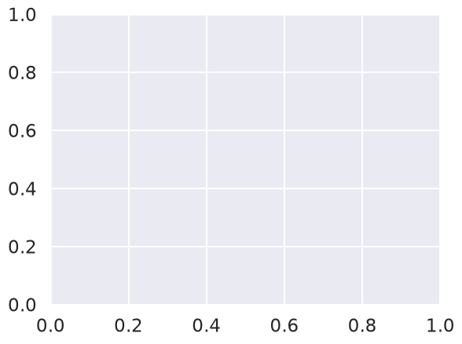
#PARAMS = np.array([39.47])
PARAMS = np.array([39.4])
x = np.linspace(0, 1, 100)
y0 = np.ones((2, x.size))
y0[0, int(-3*x.size/4)] = -1
sol = solve_bvpE(x, y0, PARAMS)
fig, ax = plt.subplots()
ax.plot(sol.x, sol.y[0])
print(sol.p)
#print(sol.y[0])
PARAMS = np.array([80.7])
sol = solve_bvpE(0.0, 1.0, 100, 0.0, 0.0, PARAMS)
fig, ax = plt.subplots()
ax.plot(sol.x, sol.y[0])
print(sol.p)
Matrix formulation for linear boundary value problems#
When the BVP is linear, you can solve it either using the interpolation already shown, or by formulating the problem as a matrix system. The later is based on a finite difference discretization for the derivatives. Let’s start with the following problem, representing the temperature \(T\) across a linear bar (Chapra, 27.1)
where \(h'\) is the transfer coefficient (m\(^{-2}\)), and \(T_a\) is the sourronding air temperature. The boundary conditions are \(T(0) = T_1 = 40\), \(T(L=10) = T_2 = 200\), and \(T_a = 20\). Also, \(h' = 0.01\).
First, please solve the problem both theoretically and then using solve_bvp or yout own method.
import numpy as np
import seaborn as sns
import matplotlib.pyplot as plt
from scipy.integrate import solve_bvp
sns.set()
sns.set_context("talk")
def deriv(t, y, params):
# YOUR CODE HERE
pass
def bc(ya, yb, params):
# YOUR CODE HERE
pass
def solve_bvp_plot(x0, xf, params):
# YOUR CODE HERE
pass
PARAMS = (0.01, 20.0)
solve_bvp_plot(0.0, 10.0, PARAMS)
print(PARAMS)
import numpy as np
import seaborn as sns
import matplotlib.pyplot as plt
from scipy.optimize import root
from scipy.integrate import solve_ivp
sns.set()
sns.set_context("talk")
def deriv(t, y, params):
# YOUR CODE HERE
pass
def h(v0, y0, yf, t0, tf, dt, params):
# YOUR CODE HERE
pass
def solve_bvp_root(y0, yf, v0, t0, tf, dt, params):
# YOUR CODE HERE
pass
PARAMS = (0.01, 20)
solve_bvp_root(40.0, 200.0, 10.9, 0.0, 10.0, 0.01, PARAMS)
Now let’s proceed with a different way: by discretizing the derivatives and setting the equation on the points. We have,
where \(\Delta x\) is the partition size, so the original equation takes the form
Finally, after collecting terms, we have
This is a tri-diagonal system for the internal points.
Exercise: Write the matrix system assuming three internal points plus the boundary points. Hint: Start with \(i=1\), you will get \(-T_0 + \alpha T_1 - T_2 = \beta\). Then for \(i=2\) you get \(-T_1 + \alpha T_2 - T_3 = \beta\) and so on. Then you get your matrix system. Your unknowns are the internal points.
Now, given the matrix system, solve it using the already seen matrix methods. Compare with the exact solution and the ones obtained from using the shooting method or solve_bvp.
import numpy as np
import scipy as sp
def solve_bvp_finite_diffs(N, ALPHA, BETA, T1, T2):
"""
N : number of internal points
"""
M = np.zeros((N, N))
b = BETA*np.ones(N)
# Set diagonal elements
# YOUR CODE HERE
pass
# Solve the system Mx = b
x = np.linalg.solve(M, b)
return np.concatenate(([T1], x, [T2]))
HPRIME = 0.01
L = 10
N = 300
DX = L/(N+2-1) # +2 by adding the boundaries -1 by number of intervals
TA = 20
T1 = 40
T2 = 200
ALPHA = 2 + HPRIME*DX*DX
BETA = HPRIME*DX*DX*TA
T = solve_bvp_finite_diffs(N, ALPHA, BETA, T1, T2)
import matplotlib.pyplot as plt
import seaborn as sns
sns.set()
sns.set_context('paper')
x = DX*np.arange(N+2)
plt.plot(x, T, '-o')
Additional Exercises#
Generic BVP#
Solve the following equation using the shooting method and the matrix method,
with \(y(0) = 5, y(20) = 8\)
BVP with Newman condition#
Here we will add a boundary condition on the derivative, on the left, which means that the left node is also an unknown. In that case you can use \(dT/dx \simeq = (T_{1} - T_{-1})/2\Delta x\) so \(T_{-1} = T_1 -2 \Delta x dT/\Delta x\) and then you get the value for the imaginary node \(T_{-1}\) which is now needed. Solve following system:
over \(0 \le r\le 1\), with \(T(r=1) = 1\) and \(\frac{dT}{dr} = 0\) in \(r=0\), for S = 1, 10, and 20 K/m\(^2\). This is a model of the temperature distribution on a circular rod with internal heat source \(S\).
Deflection of a sailboat mast (Chapra 28.22)#
The following equation can be used to model the deflection of a sailboat mast subject to wind force,
where \(f\) is the wind force, \(E\) is the modulus of elasticity, \(L\) the mast length, and \(I\) the inertia moment. Compute the deflection as a function of \(z\) if \(y = 0\) and \(dy/dz = 0\) at \(z = 0\). Use \(f = 60, L = 30, E = 1.25\times 10^8, I = 0.05\)
Deflection of a sailboat mast (Chapra 28.23)#
Same previous problem but now the force varies with height as